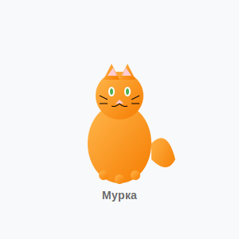
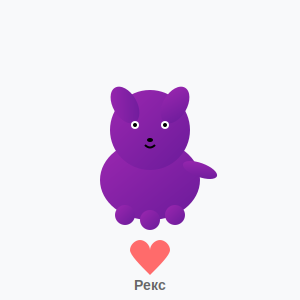
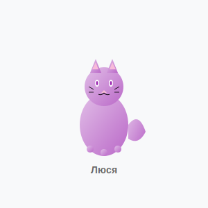
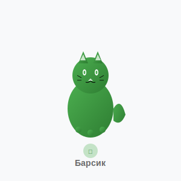

В приюте
Бобик
Кобель, 2 года
Дружелюбный и активный пес, любит играть с детьми. Очень ласковый и преданный.
Дружелюбный
Активный
Любит детей

В приюте
Мурка
Кошка, 1 год
Ласковая и спокойная кошечка, идеальна для семьи. Любит внимание и ласку.
Ласковая
Спокойная
Для семьи

Усыновлен
Рекс
Кобель, 3 года
Верный и преданный друг, нашел свой дом! Спасибо семье Ивановых!
Верный
Преданный
Нашел дом

В приюте
Люся
Кошка, 5 лет
Мудрая и спокойная кошечка, ищет тихий дом для спокойной жизни.
Мудрая
Спокойная
Тихий дом

В приюте
Лада
Сука, 8 месяцев
Молодая и энергичная собачка, нуждается в активных хозяевах.
Энергичная
Молодая
Активные хозяева

В приюте
Барсик
Кот, 2 года
Игривый и любознательный кот, отлично ладит с детьми и другими животными.
Игривый
Любознательный
Ладит с детьми